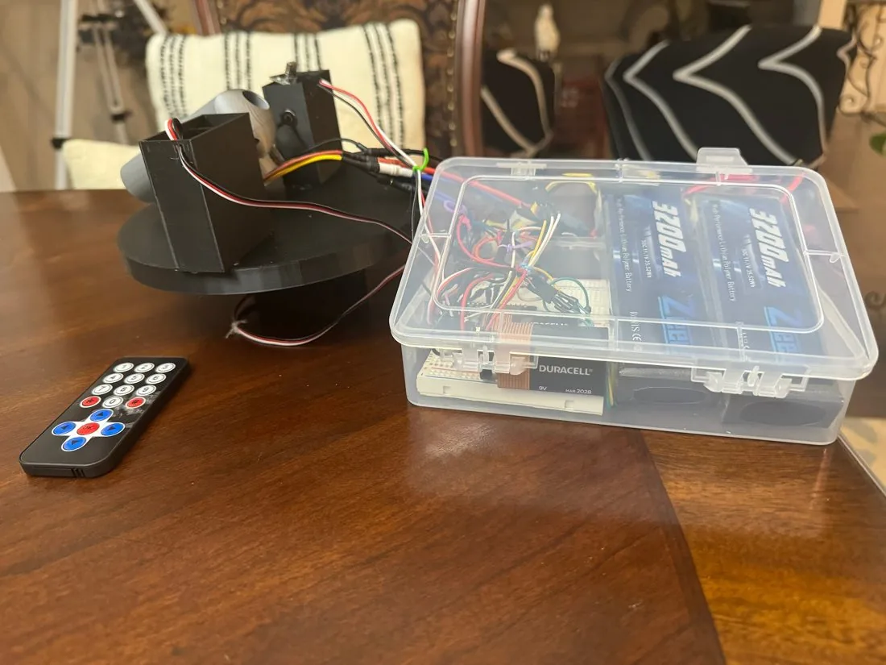

Precision ball launcher
| Context | Governor's Honors Program, engineering |
|---|---|
| Dates | 2025 |
A compression-wheel launcher built at the Governor's Honors Program, tuned to put a ball through a target window from twenty feet away.

The launcher drives a ball between compression wheels, with the electronics housed in an enclosure below the mechanism. Accuracy came from matching wheel speed to the compression the ball actually experiences, which meant tuning the gap and the speed together rather than one at a time.
Anish Bhatia — Atlanta, Georgia
anishb.atl@gmail.com